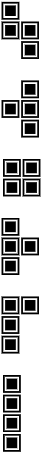

开始 | 声音 | 开关 | 复位 | ||||
掌上游戏机
一款在线模拟儿时的掌上游戏机。利用闲暇之时打磨的一款应用，希望能在无聊时体验一下它的乐趣。 目前实现了《俄罗斯方块》、《坦克大战》和《贪吃蛇》这三款游戏，还有更多游戏正在实现中。
作者: Microanswer
源码：Github
玩法介绍
可以直接按键盘上对应按键操作。
- W、↑ 键： 上
- A、← 键： 左
- S、↓ 键： 下
- D、→ 键： 右
- 空格、回车 键： 旋转
- Z 键： 开始
- X 键： 声音
- C 键： 开关
- V 键： 复位
按钮说明: 【上、下、左、右】这些按钮控制玩家移动。【旋转】切换各个游戏，在不同游戏内有不同的效果，例如变形、发射等。 【开始】选中某个游戏后点击开始即可游戏，进入游戏后点击开始则暂停，再次点击恢复。【声音】未实现。【开关】开关机。 【复位】任何时候点击复位都将直接回到初始界面。